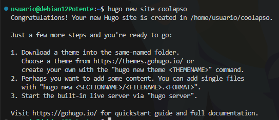
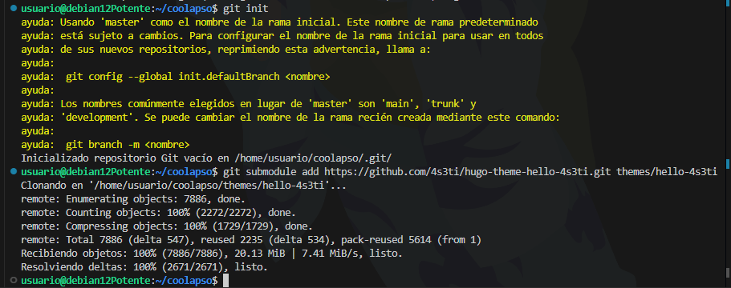
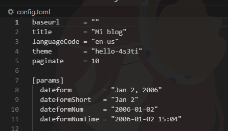
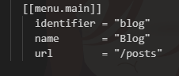
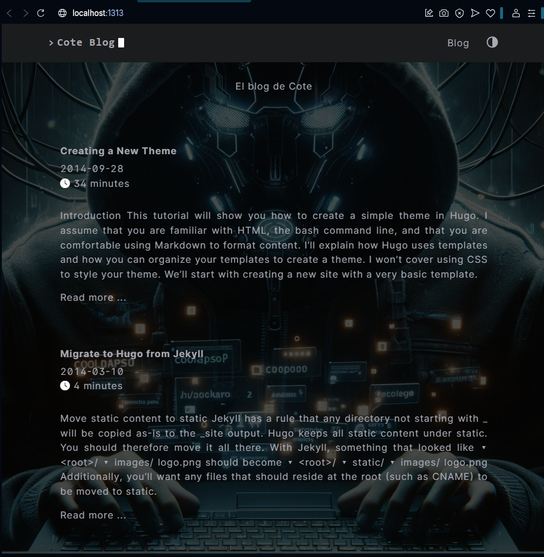

Instalación y Configuración del Tema Hello-4s3ti en Hugo
Prerrequisitos
- Tener Hugo instalado en tu sistema.
- Contar con un proyecto Hugo ya inicializado:
hugo new site nombre-del-sitio

Instalación del Tema
Opción 1: Clonando directamente
- Accede al directorio de tu proyecto:
cd nombre-del-sitio - Clona el repositorio del tema en la carpeta
themes/:git clone https://github.com/4s3ti/hugo-theme-hello-4s3ti.git themes/hello-4s3ti
Opción 2: Usando submódulos de Git
Para mantener el tema actualizado fácilmente:
1. Añádelo como submódulo:
git submodule add https://github.com/4s3ti/hugo-theme-hello-4s3ti.git themes/hello-4s3ti

Configuración Básica
- Edita el archivo
config.tomlen la raíz y añade las siguientes configuraciones mínimas: ``` baseurl = "http://example.com/" title = "Mi Blog" languageCode = "en-us" theme = "hello-4s3ti" paginate = 10
[params] homeSubtitle = "Un blog simple y hermoso" enableSharingButtons = true description = "Mi nueva página web o blog" keywords = "blog, homepage" ```

- (Opcional) Configuración de menús:
[[menu.main]] identifier = "blog" name = "Blog" url = "/posts"

- (Opcional) Copia el contenido de
exampleSiteincluido en el repositorio del tema para ver ejemplos:cp -r themes/hello-4s3ti/exampleSite/* .
Visualización
- Genera y prueba el sitio en un servidor local:
hugo serve - Abre tu navegador en
http://localhost:1313.
